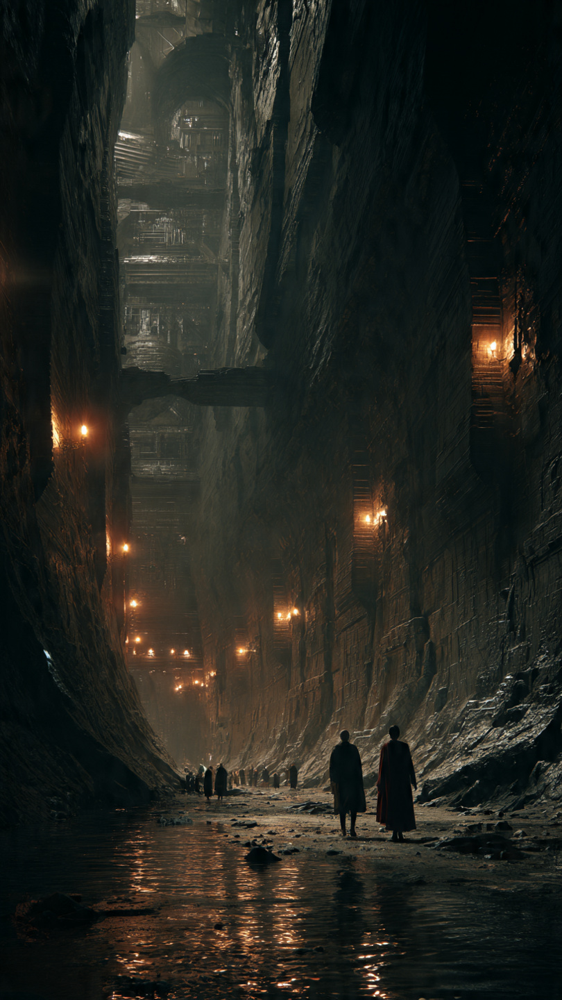
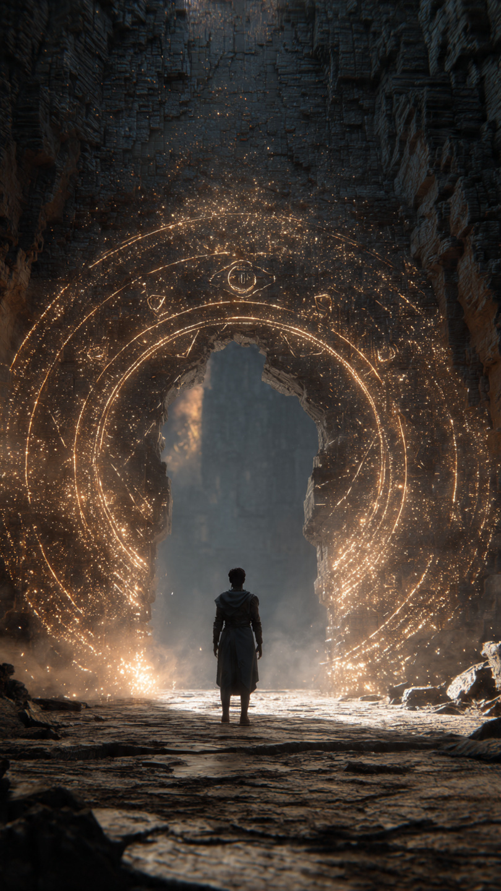

منذ آلاف السنين، كان الناس يتحدثون عن مكان لا يظهر في أي خريطة.
مكان لا تصل إليه الشمس.
ولا يسمع أحد عنه شيئًا.
كانوا يسمونه:
"مملكة الظلال".
بعضهم قال إنها مملكة للوحوش.
وبعضهم قال إنها مجرد أسطورة اخترعها القدماء لتخويف الأطفال.
لكن الحقيقة...
كانت مختلفة تمامًا.
في مدينة صغيرة بين الجبال، كان يعيش شاب يُدعى سليم.
كان يعمل في مكتبة قديمة ورثها عن جده.
وكان يحب البحث عن الكتب الغامضة والخرائط القديمة.
لم يكن يؤمن بالأساطير كثيرًا، لكنه كان يشعر دائمًا أن هناك أسرارًا مخفية في العالم لم يكتشفها البشر.
في إحدى الليالي، وبينما كان يرتب الكتب القديمة في قبو المكتبة، وجد صندوقًا خشبيًا لم يره من قبل.
كان مغلقًا بقفل أسود غريب.
وعليه رمز يشبه نصف شمس ونصف ظل.
فتح سليم الصندوق بحذر.
وفي داخله وجد كتابًا قديمًا وخريطة مصنوعة من مادة لم يعرفها.
عندما لمس الخريطة...
بدأت الخطوط تتحرك وحدها.
ظهرت طرق جديدة لم تكن موجودة.
ثم ظهرت كلمات مضيئة:
"إلى من يجد الطريق..."
"اعلم أن الظلام ليس دائمًا عدوًا."
فتح سليم الكتاب.
كانت صفحاته مليئة برسومات لكائنات تتحكم بالظلال.
لكن أكثر شيء أثار انتباهه كان صورة لمدينة ضخمة تحت الأرض.
تحتها عبارة:
"مملكة أوريليا المظلمة."
آخر مكان يحفظ توازن العالم.
في اليوم التالي، قرر سليم اتباع الخريطة.
قادته إلى جبل بعيد لا يزوره أحد.
وبين الصخور وجد بابًا حجريًا ضخمًا.
كان عليه نفس الرمز الموجود على الصندوق.
وضع يده على الباب.
فانفتح ببطء.
ظهر خلفه طريق طويل يمتد إلى أعماق الأرض.
لم يكن مظلمًا كما توقع.
بل كان مليئًا بنور أزرق غريب يأتي من الجدران.
سار سليم في الطريق حتى وصل إلى مكان لا يمكن وصف جماله.
مدينة كاملة تحت الأرض.
قصور سوداء لامعة.
أنهار من ضوء فضي.
وأشخاص تتحرك ظلالهم بشكل مستقل عن أجسادهم.
وفجأة اقترب منه حارس يرتدي درعًا داكنًا.
قال:
"إنسان من عالم النور؟"
"كيف وصلت إلى هنا؟"
قبل أن يجيب سليم...
ظهر صوت من خلف الحارس:
"اتركوه."
"لقد كنا ننتظره منذ مئات السنين."
📷 الصورة رقم 1

استدار سليم ببطء نحو مصدر الصوت.
كانت تقف أمامه فتاة ترتدي عباءة سوداء مزينة بخيوط فضية، وشعرها يتحرك وكأن حولها نسمة من الهواء رغم أن المكان مغلق.
كانت عيناها تحملان لونًا بنفسجيًا غريبًا.
قالت للحارس:
"هذا هو الشخص الذي أشارت إليه النبوءة."
نظر سليم إليها بدهشة وقال:
"أي نبوءة؟"
أشارت الفتاة إلى القصر الكبير في وسط المدينة وقالت:
"تعال معي، وستعرف كل شيء."
سار سليم خلفها بين شوارع مملكة الظلال.
كان يتوقع مكانًا مخيفًا.
لكنه وجد شيئًا مختلفًا.
كان سكان المملكة يساعدون بعضهم.
الأطفال يلعبون بين الأضواء الزرقاء.
والحرفيون يصنعون أدوات من الظلال المتحركة.
قالت الفتاة:
"أنا الأميرة لينا."
"هذه المملكة لم تكن مخفية لأننا أشرار."
"بل لأن البشر خافوا منا."
سأل سليم:
"لكن لماذا تتحكمون في الظلال؟"
أجابته:
"لأن الظل ليس غياب النور."
"الظل هو الجزء الذي يحفظ التوازن."
وصلوا إلى قاعة كبيرة داخل القصر.
كانت في وسطها كرة ضخمة من الطاقة السوداء والفضية.
لكنها لم تكن مظلمة.
بل كانت تتحرك ببطء مثل قلب حي.
قالت لينا:
"هذه هي نواة التوازن."
"منذ آلاف السنين، كانت تحافظ على التوازن بين عالم البشر وعالم الظلال."
اقترب سليم منها.
وفجأة بدأت النواة تضيء.
ظهرت أمامه صور من الماضي.
رأى الأرض منذ آلاف السنين.
ورأى البشر ومملكة الظلال يعيشون معًا.
لكن ظهر شخص أراد السيطرة على قوة الظلال.
فحدث صراع كبير.
ولحماية العالم، أخفت مملكة الظلال نفسها عن الجميع.
قالت لينا:
"لكن النواة بدأت تضعف."
"هناك شيء يحاول كسر الحاجز بين العالمين."
سأل سليم:
"ومن يفعل ذلك؟"
قبل أن تجيب...
اهتز القصر بالكامل.
انطفأت أضواء المدينة.
وبدأت الظلال تتحرك وحدها بطريقة مخيفة.
دخل أحد الحراس مسرعًا.
وقال:
"لقد عاد."
تغير وجه لينا.
وقالت:
"مستحيل..."
"لقد اختفى منذ ألف عام."
ظهر على جدران القصر ظل عملاق.
ثم خرج منه صوت بارد:
"ظننتم أنكم تستطيعون إخفاء القوة إلى الأبد؟""حان وقت أن تصبح كل العوالم مملكتي."
نظر سليم إلى الأميرة.
فقالت بصوت منخفض:
"لقد وجدنا الشخص الوحيد القادر على إيقافه."
"لكن المشكلة..."
"أنه لا يعرف حتى الآن ما القوة التي بداخله."
📷 الصورة رقم 2

اهتزت مملكة الظلال بأكملها.
كانت الجدران ترتجف، والأنهار الفضية بدأت تفقد ضوءها.
أما الظل العملاق الذي ظهر فوق القصر، فكان يزداد وضوحًا مع كل لحظة.
قالت الأميرة لينا:
"إنه داركوس."
"أقوى مستخدم للظلال عرفته المملكة."
"كان حارسًا قديمًا..."
"لكنه اختار القوة بدل التوازن."
ظهر داركوس أمام الجميع.
لم يكن وحشًا كما توقع سليم.
بل كان رجلًا يرتدي درعًا أسود، وعيناه تحملان غضبًا وحزنًا عميقًا.
قال:
"لقد خبأتم هذه القوة عن العالم."
"لكنني سأعيدها إلى مكانها الحقيقي."
"تحت سيطرتي."
رفع يده.
فبدأت ظلال المدينة كلها تتحرك نحوه.
شعر سليم أن شيئًا بداخله يستجيب لهذه القوة.
وضعت لينا يدها على كتفه وقالت:
"أنت لست هنا بالصدفة."
"النواة اختارتك."
سأل سليم:
"لكنني مجرد إنسان."
ابتسمت لينا وقالت:
"قبل آلاف السنين..."
"كان هناك شخص من عالم البشر وآخر من عالم الظلال."
"اتحدا لحماية العالمين."
"ومن نسلهما وُلد شخص يحمل نور العالمين."
نظر سليم إلى يديه.
وفجأة بدأت ظلاله تتحرك بشكل مختلف.
لم تكن مظلمة.
بل كانت مزيجًا من الضوء والظل.
فهم الحقيقة.
لم تكن قوته في التحكم بالظلام...
بل في تحقيق التوازن بين النور والظل.
بدأت المعركة.
أطلق داركوس موجات ضخمة من الظلال.
لكن سليم لم يحاربها بالقوة.
بل استخدم قوته لتهدئتها.
كل ظل غاضب كان يتحول إلى ضوء هادئ.
صرخ داركوس:
"لماذا لا تستخدم القوة لتدمير أعدائك؟"
أجابه سليم:
"لأن القوة التي تُستخدم للتدمير..."
"تصنع عدوًا جديدًا."
اقترب سليم من نواة التوازن.
ووضع يده عليها.
انتشر ضوء هائل في جميع أنحاء المملكة.
بدأت ذكريات داركوس القديمة تظهر.
رأى الجميع أنه لم يكن يريد الشر في البداية.
كان خائفًا من أن يضيع عالم الظلال.
لكن خوفه جعله يتحول إلى الشخص الذي كان يحاول منعه.
خفض داركوس رأسه.
وسقط الدرع الأسود عن جسده.
قال:
"لقد نسيت لماذا كنت أحمي هذه المملكة."
ثم اختفى الظلام من حوله.
بعد انتهاء المعركة، قررت مملكة الظلال عدم الاختباء مرة أخرى.
لم تفتح أبوابها للجميع...
لكنها سمحت للعالمين بالتواصل من جديد.
أما سليم...
فعاد إلى مكتبته القديمة.
لكنه لم يعد يبحث عن الأساطير.
فقد أصبح جزءًا من واحدة منها.
وفي كل ليلة، كان ينظر إلى ظله على الأرض.
فيبتسم.
لأنه عرف أن لكل شيء جانبًا لا يراه الآخرون.
حتى الظلام...
قد يحمل بداخله نورًا لا يعرفه أحد.